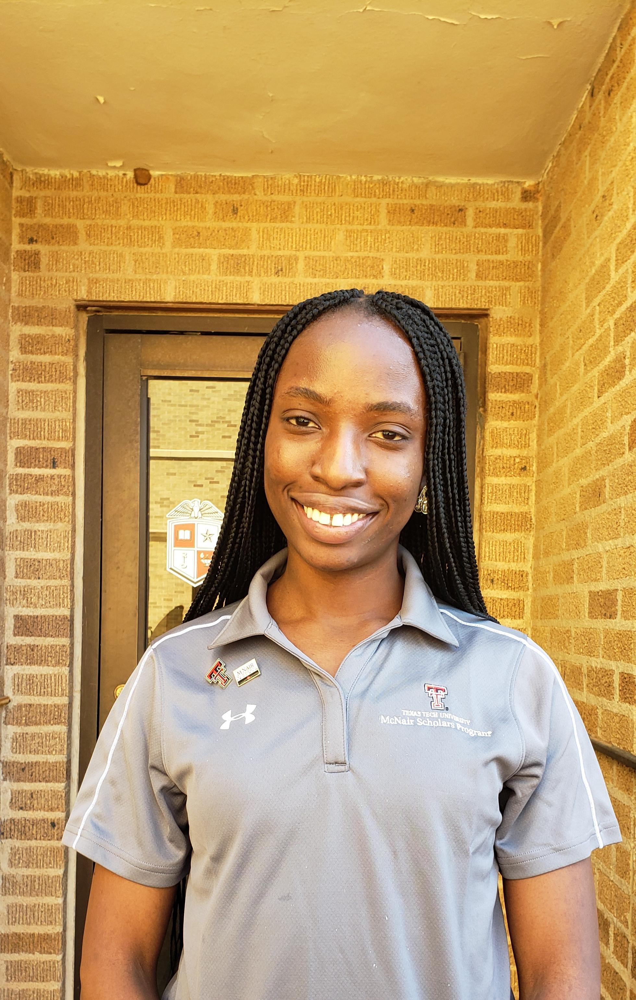

TITLE HEADING
Title description, Dec 7, 2017

Becoming a McNair Scholar has a story to it. It first starts
with my love for video games.
I used to have this game boy
I played religiously, then I went to internet
games and
my
addiction to games kept evolving. I still the first time
I play on the Playstation Portable,
I was taken aback
by how this technology made me happy. My siblinngs
and I acquired a Wii U
from our father because we
simply needed more entertainment. I played on that
console
very consistently because I had fun, and burned
a lot of calories to.
Then, I traveled to the
U.S to study Computer Science.
One of my most memorable moments was during the winter,
and I was introduced to
Virtual Reality via headset.
My mind was blown! I was able to reach out and touch
dinosaurs around me (I was in a Jurassic Park game).
From there I began to do more
research on my experience,
not only was there Virtual Reality (VR), but I found
there is Augmented Reality (AR), for example, Pokemon Go.
I fell in love with
this type of software/technology and
I decided I would pursue a career in this field.
Then I
found out about the McNair Program and the opportunitues
presented by this program.
I applied, got in and
on my track to getting prepared for a graduate school and getting
my PhD in the CS field with AR & VR technologies.
P.S: I thought of getting my PhD before I moved!